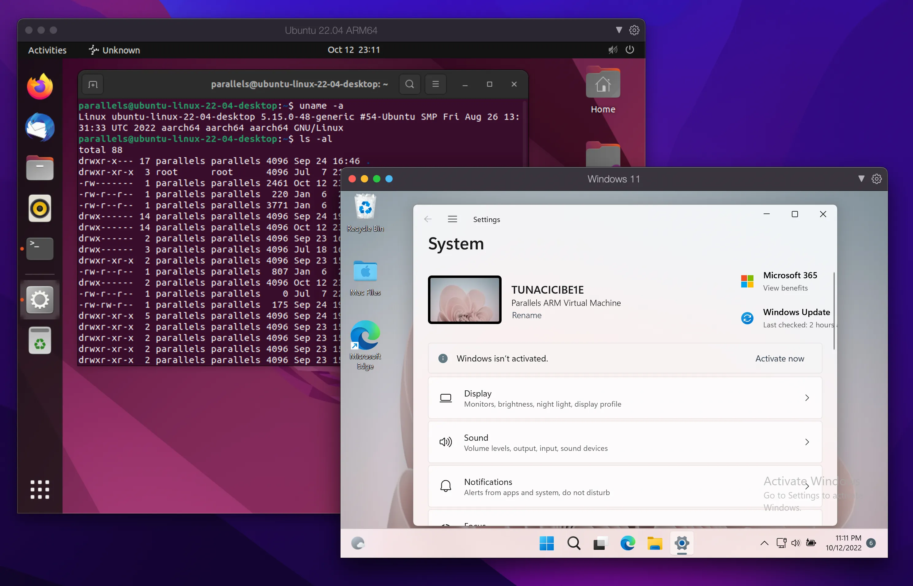
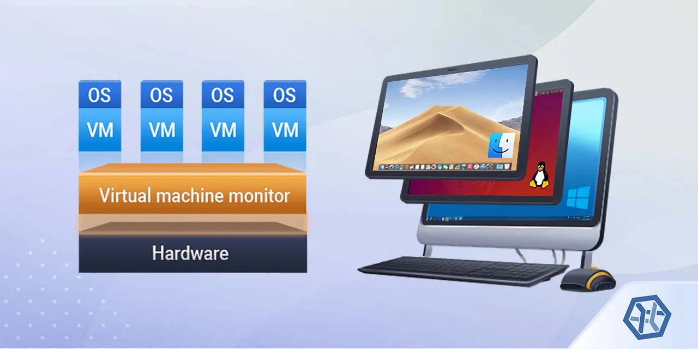
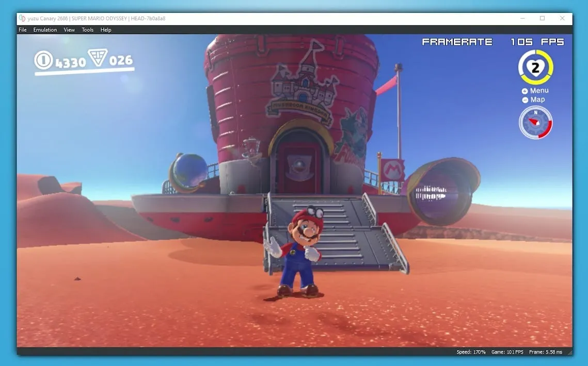
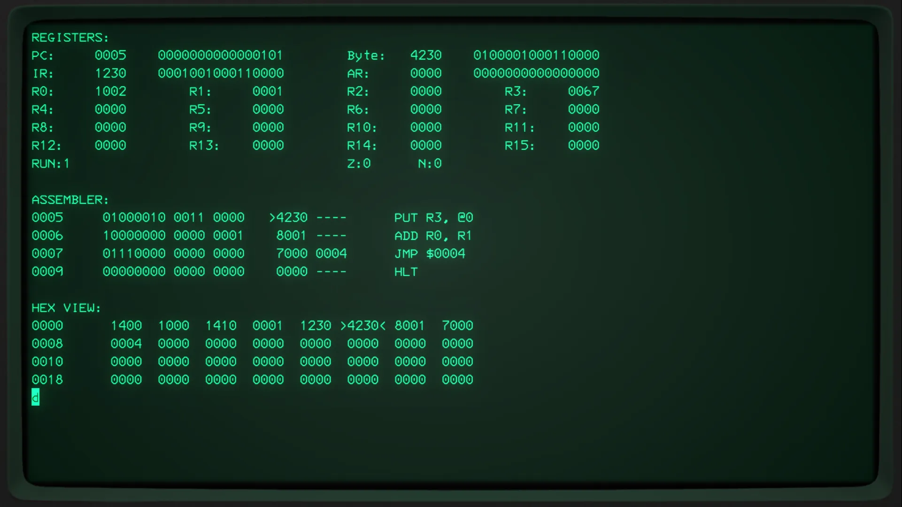
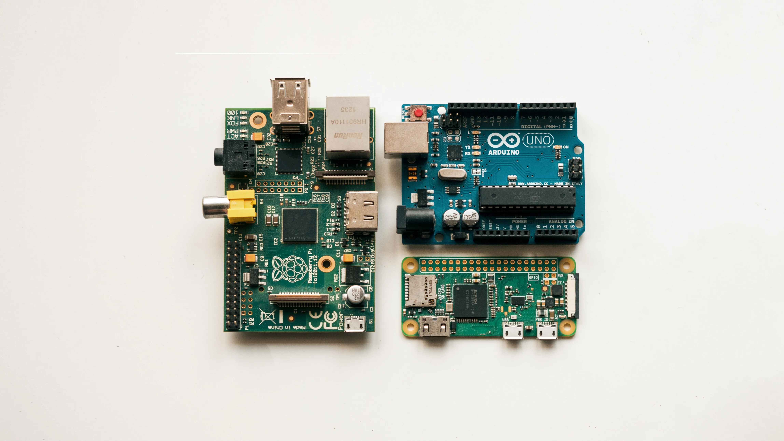

Virtualization & Emulation
When developing software applications, there are tons of crazy tools. In the older days, some of those crazy tools were just impossible to think of because of the hardware and design limitations in the software world. But now, they are very common. And on some areas, are just a necessity. Of course, I am talking about virtualization and emulation.
If you ever meddled with software development, you are sure to heard about them. You might even be using them daily in your projects. Naturally, they sound similar but there are some fundamental differences between them. Here in this article I will try to explain how they work and the problems they solve. I will compare and list their differences. So stick with me to the end.
TLDR;
Host: The operating system that runs the virtual machine or the emulator.
Guest: The virtualized/emulated software that runs on the host operating system.
Virtualization: Creation of a simulated environment for a software, like an operating system. Uses host's dedicated CPU, RAM and I/O capabilities. Makes running multiple operating systems on a single hardware possible.
Emulation: Creation of a simulated enviroment for a device, like the Playstation 1. Simulates both it's architecture (ARM/x86), software (OS) and hardware (CPU, I/O). Makes running different devices/softwares on a different device possible.
Notes:
1. Virtualization runs on a layer called Hypervisor.
2. Virtualization needs to be supported on hardware level (Intel® VT or AMD-V)
3. Virtualization is faster since it is hardware supported and uses the same architecture as the hosts. (no interpretation)
4. Emulations have big uses in embedded systems and dev kits.
5. Emulating a device/software requires reverse-engineering.
6. Emulations can be considered illegal. (Eg. Nintendo Switch)
7. Emulations are slower because of the CPU interpreter.
Virtualization

Two Virtual Machines Running on macOS
Let’s say you are using a Windows 11 on your machine. And there is a software that you really want to use but it is only available on Ubuntu. What are you going to do? You can change your operating system and install Ubuntu to your hard drive. But then you will have to move EVERYTHING from Windows 11 to Ubuntu. Or you can choose to dual-boot. But that requires you to reboot every-time you want to switch between them. None of those options are practical. However, there is a solution.
Virtualization comes to your rescue! Instead of installing Ubuntu directly onto your hard drive, you can just virtualize it. Apps like Virtual Box, VMWare Player or Parallels, provides you with a set of tools to help you virtualize operating systems. These apps are called virtual machines.
Virtual machines allows you to install and run different operating systems without restarting your computer. They use your computers hardware resources like CPU, RAM, HDD, network or I/O devices. These resources are given to the virtual machine (guest) by your operating system (host). For example, you can choose to dedicate 2 CPU cores, 2GB RAM, 50GB HDD space and 24Mbit/s network speed.

Basic Layered Architecture of a Virtual Machine — Source: ufsexplorer.com
The guest can be installed like you normally do on a physical computer. You boot the .img file. You follow the operating system’s installation steps and that’s it. You now have a “full” operating system.
Like anything in a software, there are some limitations to the virtual machines. Since they run on top of your operating system, they can’t make use of the full hardware. Thus, they have lower performance when compared to natively on the computer. Other big limitation is the system architecture. Virtual machines can’t run operating systems that have different system architecture than the host. For example, if your CPU is ARM then you can only install ARM operating systems. You can’t install x86_64 or anything else.
For running operating system that have different architectures, you need look for something different. You need to look for an emulator.
Emulation

Nintendo Switch Emulation — Source: businessinsider.com
What is the difference between a normal desktop computer and a Playstation? Well, everything from the case to the CPU, RAM, GPU, motherboard, connectors, cables, buttons and software is different. I mean they are two completely different machines. But with enough abstraction we can make them look similiar. They both have a physical CPU and RAM. They both have an operating system. They both run software. They both have buttons and such. So similar yet so different.
Now, let’s say I don’t want to buy a Playstation. I have a powerful desktop computer. Can I use it to make my own Playstation? Yes. Yes you can. If we look at the similarities from before, we can work something out. All we need is to mimic Playstation’s hardware like CPU and RAM and it’s software. If we can do all of that, we will have a Playstation in our hand. We just can’t touch it.
Congratulations my friend, you just did an emulation. You mimicked the hardware and the software. Your own machine basically runs a real copy of the Playstation. Let’s move on to the technical definition and details.

An Emulated 16-bit CPU— Source: hackaday.io
Emulation, is a software behaving like another device or a machine. It uses the hosts hardware resources to create another hardware. Since it creates a whole new hardware, there is no architecture limitations. Any machine system, in theory, can emulate any machine. Your gaming Windows machine can emulate the Playstation 2, Nintendo Switch, Raspberry Pi, an Android device, mouse, keyboard, fridge, dishwasher or basically anything.
The process of emulation something is very time-consuming. You need to reverse-engineer the system you want to emulate. Write low-level codes and maybe even create simulated environments. When it comes to emulation, there is no easy task. Everything requires great system resources like a high-end CPU, fast GPU and RAM.
With advancing technology, emulating a hardware is becoming a more easier and accessible. There are emulators of old gaming consoles like Xbox 360, Playstation 2 and Atari. All of them needs powerful computers to run. The use cases of an emulation is not very consumer targeted. They are used in embedded world to develop and debug software without having access to a real hardware.

Popular Embedded Boards Like Arduino — Source: unplash.com by Harrison Broadbent
Final Words
Virtualization and emulation are similiar topics. They both tries to encapsulate and mimic something. Virtualization encapsulates the software. Emulation on the other hand mimics a whole hardware and encapsulates everything.
I have written a TLDR version at the top of this article. You can check it for a quick review. I will try to update and correct this article whenever I learn something new or find a mistake. I hope that you liked my article and learned something new. If you spot any errors or mistakes please let me know.
Take care ❤

Thanks for reading & Take care ❤
Follow me on X (formerly Twitter), if you like my works that is >.<